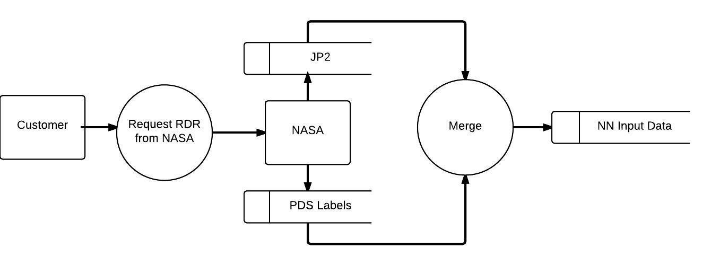
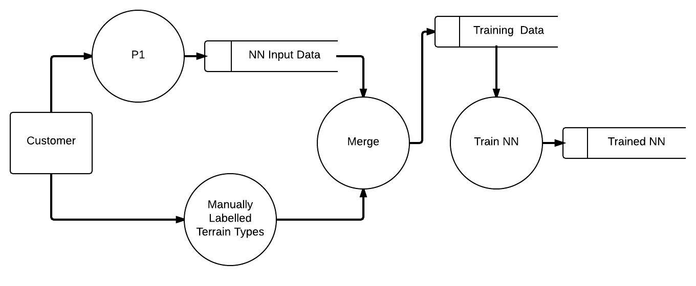
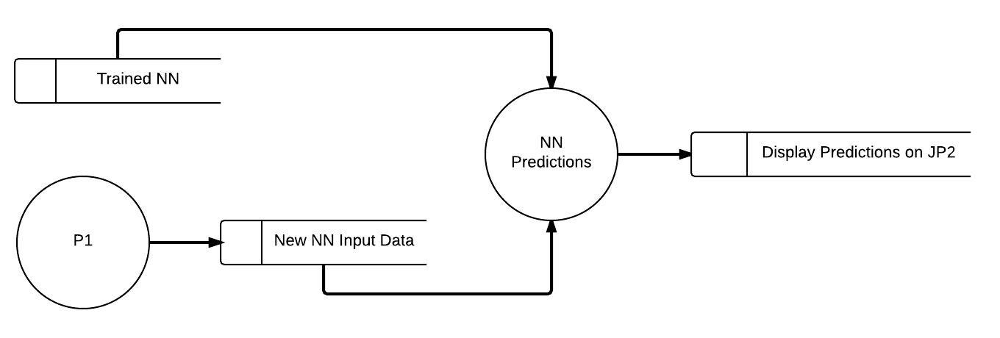

The process begins with user acquisition of the Reduced Data Record from NASA. This is composed of two JPEG-2000 images, grey-scale and rgb, and a Planetary Data System compliant label file. The data sets will be merged and serve as the input for the neural network.

A subset of the data sets will be manually labelled by the user. The manual labeling will be combined with relevant RDRs used as training data for the neural network.

After training of the neural network, the neural network will be given unfamiliar data sets and tasked with identifying terrain types it was taught to identify. The predictions will then be displayed to the user for evaluation.
